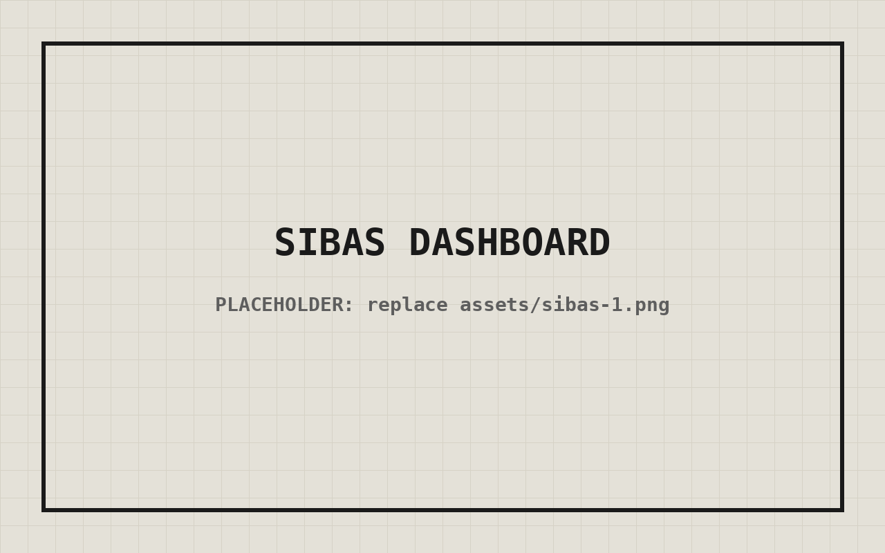
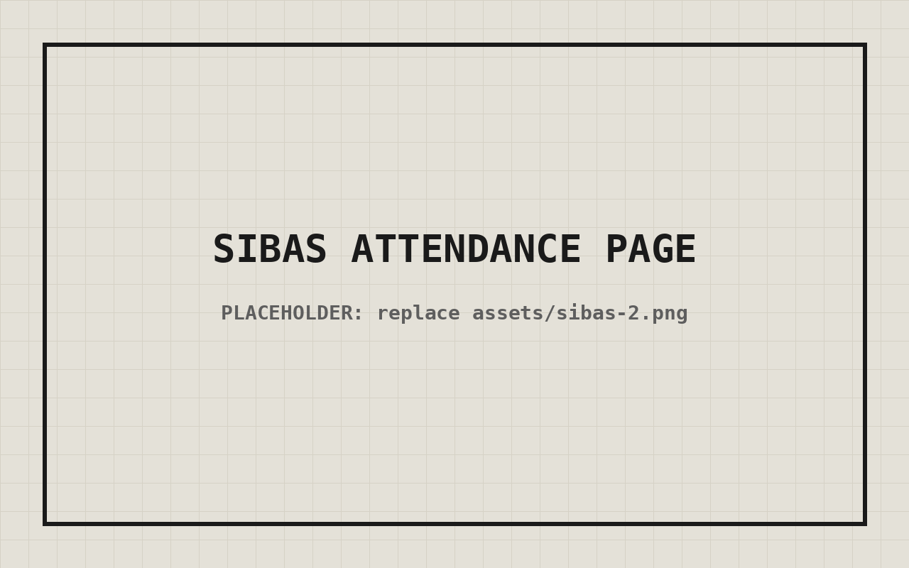
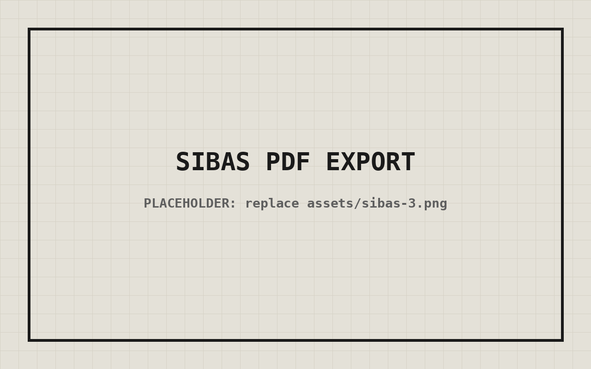

Overview
SIBAS is a full-stack attendance management app I built for my database course (DTS304). Admins manage users, lecturers record attendance, and students check their own records. Everything is stored in a PostgreSQL database with 13 tables.
Problem solved
Paper attendance is slow to take, easy to fake and painful to total up at the end of the semester. SIBAS keeps attendance in one structured database, so reports come from queries instead of manual counting.
Features
| FEATURE | STATUS |
|---|---|
| Admin, Lecturer and Student roles | DONE |
| Manage Users admin page | DONE |
| PDF export of attendance reports | DONE |
| 13-table relational schema (full DDL) | DONE |
Screenshots



Technologies used
Python, Streamlit for the interface, PostgreSQL for storage, psycopg2 to connect the two, and ReportLab for PDF export.
What I learned
- Designing a schema that holds up across roles, courses and sessions
- Connecting an app to a database, and debugging port and password mismatches
- Auditing an incomplete codebase: restoring a missing schema file and finishing half-built features
- Explaining where data lives and how the app reaches it, which I did in my project defence